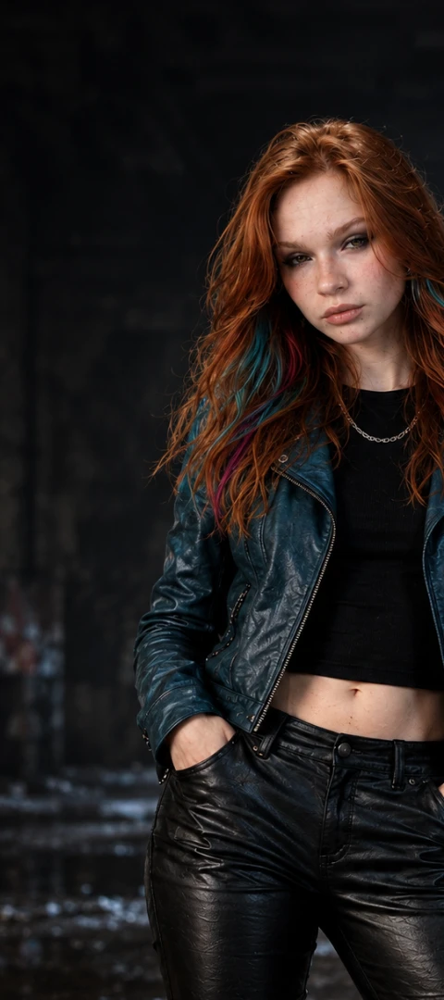
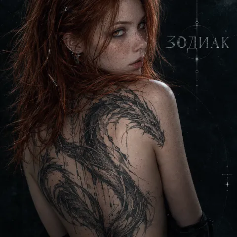

NOCODE FM НОУ-КОД FM
---
YOUТЫ
0
VIRABOT
0
VIRAL PICK ВИРАЛ ВЫБОР
[ 22.09.2025 ]
Не гаси — alternative rock [RU] is out!
Vira L. is 🔥 Raw. Bold. Unstoppable. Viral. 🚀#Cyberworld #Unsubscribe #NoCodeGirlНе гаси — alternative rock [RU] в сети!
Вира Л. — 🔥 Дикая. Дерзкая. Неудержимая. Вирусная. 🚀#Cyberworld #Unsubscribe #NoCodeGirl

404 LAB 404 ЛАБ
ЗООДИАК
New albumЗООДИАК
Новый альбом
Vira L. is 🐀 Neural. Lethal. Primal.🐒 She holds the scalpel.👎
The zoo is about to break loose #Zootechnics #NoCodeGirl #UnsubscribeВира Л. — 🐀 Нейронная. Смертоносная. Первобытная.🐒 Скальпель в её руках.👎
Зоопарк скоро откроется #Zootechnics #NoCodeGirl #Unsubscribe
23.09.2026 - finished КРЫСА — alt rock [RU]
30.09.2026 — Track 02 — work in progress...23.09.2026 — релиз КРЫСА — alt rock [RU] готов
30.09.2026 — Трек 02 — в разработке...
